Este mato é tão primitivo – disse o Arrelia, procurando abrir caminho com sua bengala – que parece sermos os primeiros a vir aqui, não é mesmo?
- Tenho a impressão de que de um momento para outro vai surgir na nossa frente um índio ou uma onça! – exclamou Jaci, olhando cuidadosamente em redor.
- Estou-me sentindo como um verdadeiro bandeirante – comentou Iberê com entusiasmo.
- É “verdaude”. Dá mesmo essa impressão. Mas somos pequenos bandeirantes, bem pequeninos. Nem Podemos comparar o que estamos fazendo com o que eles fizeram – respondeu o Arrelia, continuando a abrir caminho valentemente com sua bengala.
Logo saíram na Estrada, e ele exclamou todo orgulhoso:
- Até que enfim! Que aventura! Estou que não aguento mais! Que “caminhauda”!
- Tenha dó! – interrompeu Sérgio. Acho que não andamos nem cinco minutos! Não estou vendo aventura nenhuma!
- Não brinque! – pediu ele, sentando-se numa elevação de terra à beira do caminho.
As crianças também se sentaram nos lugares mais favoráveis, procurando a sombra do mato que vegetava à beira da estrada, pois estava uma tarde bem quente, uma tarde própria para um cochilo: muito quente, sem vento e sem ameaça de chuva.
- Estou com “vontaude” de tirar uma soneca. Vamos? – disse o Arrelia, bocejando com o maior ruído possível.
- Nada disso! – protestou Marisa com uma energia que deixou o Arrelia espantado. Não viemos aqui para ficar dormindo!
As outras crianças também protestaram contra a pretensão do Arrelia.
- Que belos bandeirantes somos nós! – queixou-se Iberê. Vivemos dormindo! Vamos desbravar esse mato!
- Mas eu disse que éramos bandeirantes bem pequeninos, não disse? – inquiriu o Arrelia, com cara de piedade. O que fizemos foi suficiente para nós! Vamos repousar que está muito calor! Depois, podemos ser bandeirantes ao nosso modo.
Diante do olhar interrogativo das crianças, o Arrelia esclareceu:
- Podemos ficar sentados aqui imaginando que estamos desbravando o sertão.
Ninguém concordou com ele, a não ser Carlinhos, que havia descoberto as maravilhas de ficar sonhando.
- Ele tem razão, pessoal! – disse o menino. Está fazendo muito calor para andarmos por aí! Sabem o que podíamos fazer? Ficar aqui ouvindo o Arrelia contar alguma estória de bandeirantes, hein? Que tal?
A ideia foi bem recebida por todos os outros, menos pelo Arrelia:
- Ficar falando com este calor? Vamos tirar um cochilo! Tenham “peuna” de mim!
Diante da enérgica negative de seus companheirinhos, o Arrelia teve de desistir do cochilo. Foi intimado: ou contava a estória ou iam desbravar o mato.
- Está certo! – concordou ele. Com todo o barulho que fizeram perdi mesmo o sono.
- Então vamos andar pelo mato! – exclamou Sérgio, procurando levantar-se.
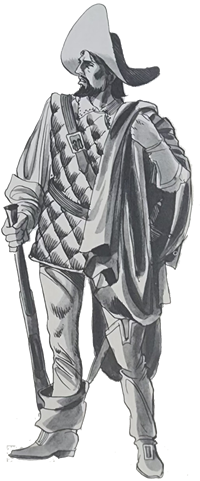
- Mas não perdi a preguiça – completou o Arrelia, bocejando demoradamente. Prefiro contar a estória.
- Olhem, sem brincadeira – tornou ele – a gente não pode viajar a São Paulo e não lembrar-se dos bandeirantes. A eles devemos muito do que somos hoje: Antônio Raposo, Fernão Dias Pais Leme, Bartolomeu Bueno da Silva, Borba Gato . . .
Naturalmente, a vida cheia de aventuras destes homens tão corajosos gerou muitas e interessantes lendas. Algumas acabaram por confundir-se a tal ponto com os acontecimentos verdadeiros que o povo acredita terem mesmo acontecido. Tem uma, por exemplo, sobre Borba Gato. Diz que por ele ter vivido muito tempo na selva, ficou tão feio, mas tão feio que sua própria família não o reconheceu e não quis recebê-lo em casa.
- E como é que nós estivemos na selva e não ficamos diferentes? – perguntou Carlinhos, espantado.
O Arrelia deu risada:
- Ora! Nós estivemos bem pouco tempo, com todo o Conforto e por nosso desejo. Com ele foi diferente. Viu-se obrigado a empenhar-se na selva inóspita e a viver como selvagem.
- E por que ele foi obrigado a fazer isso? – estranhou o menino.
- Porque estava sendo perseguido por um crime. Por um crime que não havia cometido!
- Essa não! – exclamou Carlinhos. Se não havia cometido nenhum crime por que estava fugindo?
- Não é a primeira vez que a gente ouve casos assim, Carlinhos. Quanta gente não existe que “pauga” pelo que não fez?
O Arrelia parou de falar, enfiou a mão no bolso, tirou-a cheia de balas e distribui-as às crianças. Pôs-se também a chupar uma e continuou:
- Como vocês devem saber, Borba Gato era genro de Fernão Dias e participou da famosa bandeira que o sogro organizou para ir em busca das cobiçadas esmeraldas. Em Minas Gerias, eles descobriram importantes minas de ouro. Fernão Dias podia dar-se por muito satisfeito, não fosse o sonho de encontrar as esmeraldas. Não se importava com mais “nauda”. Só sossegaria ao encontrar as cobiçadas pedras. Resolveu continuar a busca, acompanhado de alguns homens e deixou Borba Gato guardando as minas de ouro, com o grosso da bandeira.
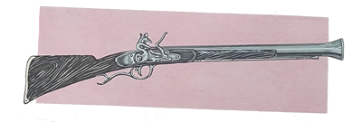
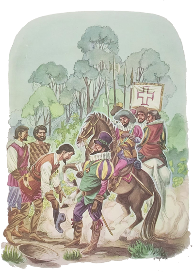
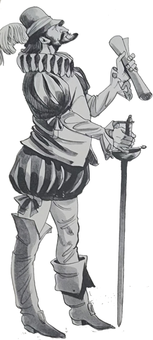
Fernão Dias receava que na sua ausência aparecesse algum enviado do rei de Portugal para reclamar a posse das minas, pois embora houvesse sido autorizado pelo rei anterior, o novo monarca pensava de modo diferente. O bandeirante sabia que o gênio de Borba Gato não era brincadeira. Era “braubo” como ele só. Não lhe custava muito perder a calma, não. E não convinha criar desentendimentos com algum representante do rei. Assim, disse-lhe:
- Olhe, vou ausentar-me por algum tempo a fim de continuar a busca das esmeraldas. Se aparecer por aqui algum emissário do rei e reclamar a posse das minas que descobrimos, procure entender-se com ele. Não use de violência, o que só nos poderá prejudicar. Mas não lhe entregue as minas!
- Vá em paz! – respondeu Borba Gato. Se alguém aparecer, saberei manter-me calmo. Nada acontecerá.
Tranquilizado pelas palavras do genro, Fernão Dias partiu.
Passou-se algum tempo. Um belo dia, quando Borba Gato descansava um pouco de seus afazeres, deitado à sombra de uma árvore, saíram de repente do sertão vários homens armados e dirigiram-se a ele. Aquele que pelas roupas e pelos modos parecia ser o principal perguntou-lhe:
- O Senhor é Fernão Dias Pais? – e apresentou-se.
Era um Fidalgo espanhol chamado Dom Rodrigo. Parecia ter o rei na “barriuga”. Orgulhoso e imponente como nem sei o quê. O rei de Portugal havia-o nomeado Administrador Geral das Minas. Borba Gato não gostou nem um pouco dos modos dele e sentiu vontade de dar-lhe uma resposta atravessada. Mas lembrou-se de sua promessa e conteve-se, pois podia ser um enviado do rei, como de fato era. Assim, respondeu-lhe delicadamente:
- Não, não sou eu. É meu sogro.
- E onde está ele?
- Acha-se ausente e deixou-me encarregado das nossas minas.
O Fidalgo deu uma risada sarcástica que deixou Borba Gato vermelho de raivas. Depois disse com o maior pouco caso:
- A gente ouve cada uma! Suas minas! Elas pertencem ao rei de Portugal! Vim aqui para inspecioná-las e oficializar a posse. É um crime contra a coroa elas ficarem nas mãos de aventureiros como os senhores! Quanto ouro já não deve ter sido roubado!
Borba Gato ficou louco da vida mas não perdeu o controle. Procurou explicar ao fidalgo o direito que ele e Fernão Dias possuíam sobre as minas. Fez tudo o que podia mas o outro não lhe deu ouvidos. Aí Borba Gato lhe disse que não ia permitir que ele se apossasse das minas. Que esperasse a volta de Fernão Dias e este lhe provaria o seu direito sobre elas. O fidalgo não concordou e deu-lhe um prazo para a entrega pacífica das minas. Por sua vontade, Dom Rodrigo não teria esperado nem um minuto. Porém era grande a quantidade de homens que compunham a bandeira de Fernão Dias, e ele achou melhor agir com um pouco de calma, contando com que Borba Gato, refletindo um pouco, chegasse à conclusão de que era melhor não contrariar a vontade do rei.
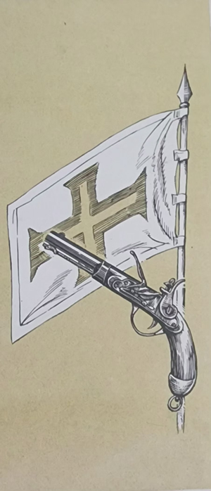
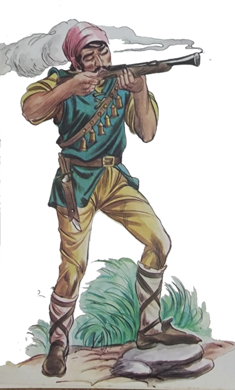
Assim que ficou só, Borba Gato pôs-se a andar em voltas, bufando e praguejando. O que poderia fazer? Entregar as minas seria trair a confiança de Fernão Dias. Resistir provocaria por certo terríveis consequências. Era preciso aguardar a volta do sogro. Pensou em ter uma conversa mais demorada com Dom Rodrigo a fim de convencê-lo. Lembrou-se de que ele, Borba Gato, era violento e ainda podia acabar por perder o controle diante da arrogância do enviado do rei. O fidalgo também não aparentava ser muito paciente. Achou melhor realizar um encontro num lugar distante das minas, aonde os dois iriam desarmados, seguidos apenas por alguns homens de confiança. Feita a proposta, Dom Rodrigo concordou. Escolheu alguns de seus acompanhantes, Borba Gato escolheu os seus, os dois desarmaram-se e seguiram para o local escolhido por Borba Gato.
Chegaram lá e começaram a conversar. No princípio a coisa foi bem. Porém pouco a pouco os ânimos começaram a exaltar-se.
- O senhor está querendo ludibriar-me! – gritou o fidalgo. Pensa que sou bobo? Quer apenas ganhar tempo para preparar alguma traição ao rei! Não passa de um reles aventureiro! Exijo a entrega imediata das minas!
Nem há dúvida de que Borba Gato não gostou do título. Reles aventureiro! Ele, um bandeirante, um desbravador, o verdadeiro dono da terra, ser tratado assim! Não resistiu e avançou para o espanhol. O fidalgo avançou para ele. Ia sair uma briga “daqueulas”! Sorte que não se encontravam armados.
Quando já estavam quase se agarrando, um dos acompanhantes de Borba Gato perdeu a calma. Temendo pela vida de seu chefe, não esperou mais e deu um tiro no fidalgo. Foi um tiro certeiro. O homem caiu sem dizer um ai. Deu uma confusão! . . .
Como os acompanhantes de Dom Rodrigo eram poucos Diante da gente de Borba Gato, resolveram ir comunicar o acontecido e trazer reforços para prender o bandeirante e tomar posse das minas. Agora sim é que ia ser.
- E por que desejavam prendê-lo? – surpreendeu-se Marisa. Quem deu o tiro não foi ele!
- Mas ele era o chefe – respondeu o Arrelia, tirando mais balas do bolso. Era portanto o responsável. Sendo o mais importante dali, devia pagar pelos outros.
- Que engraçado!
- Pois é. “Engraçaudo” mesmo.
Bem, naquele tempo, um dos maiores crimes era matar um fidalgo. Pobre de quem o fizesse. Nem é bom pensar. Borba Gato sabia o que o esperava. Só havia um recurso: fugir para a selva. Sabia que todas as cidades, todos os povoados seriam vasculhados. O rei não mediria esforços para aprisioná-lo.
Sabendo das torturas que o aguardariam, não esperou mais e fugiu para o sertão. Embora fosse homem habituado às terríveis exigências da selva, desta vez as condições eram diferentes: ele estava sozinho e fugindo. Corria sobressaltado pelo mato adentro, mal parando para descansar. O fato de encontrar-se sozinho aborrecia-o muito. Não havia ninguém com quem conversar na noite longa e escura, cheia de ruídos inquietadores. Temia que a própria fogueira que era obrigado a acender para manter os bichos afastados acabasse por atrair os seus perseguidores. Pouco dormia, e acordava sempre assustado, vendo um inimigo em cada sombra. Tão logo amanhecia, ele recomeçava a caminhada, tomando mil precauções para não ser descoberto.
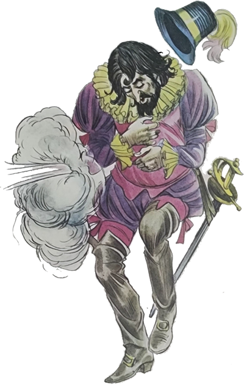
- Que sofrimento! E sem ter culpa! – exclamou Marisa.
- Andar sozinho pela Floresta! – considerou Sérgio. Ainda em turma vá lá. Mas sem ninguém!
- Não é mesmo brincadeira – respondeu o Arrelia e continuou após haver procurado inutilmente mais balas:
- Depois de vários meses de fuga, foi “encontraudo” por um grupo de índios.
- Mais essa! – interrompeu Carlinhos. Pobre dele! E foi comido pelos selvagens?
- Não, não foi – respondeu o Arrelia depois de haver-se arrumado melhor. O seu conhecimento da selva o salvou. Por sorte, o idioma daqueles índios não lhe era completamente estranho. Assim deu para entender-se com eles. Com muito sacrifício explicou o que lhe havia “aconteciudo” e os índios o convidaram a ficar com a tribo. Não vendo outro recurso, o bandeirante concordou. Pelo menos não estaria sozinho. Os índios ficaram contentes.
- Muito bem – disse ele. Agradeço-lhes a bondade e a confiança. Vocês acreditam em mim. No entanto, meus irmãos, os brancos, não acreditariam.
Partiram todos em direção à tribo. Borba Gato sentia-se agora mais seguro e tranquilo.
Os índios que estavam na aldeia também ficaram contentes em recebê-lo. Deram-lhe uma boa cabana, e ele passou a viver com a tribo. E o tempo foi passando. Naturalmente, ele, com seus conhecimentos, era muito útil à tribo. E todos os índios gostavam dele.
Agora é que vocês vão ver como a saudade e a dúvida podem transformar uma pessoa. Quando ele andava pela selva, tinha sempre alucinações. Confundia o canto dos pássaros com a voz de seus filhos e ficava bastante tempo conversando com eles. É “clauro” que os índios andavam preocupados com o procedimento de seu hóspede, e um deles resolveu contar ao cacique o que se passava:
- Ele fica conversando com os pássaros numa linguagem que não se entende. Terá enlouquecido?
O chefe dos índios era um homem muito sábio. Antes de responder, pôs-se a meditar profundamente, Após algum tempo respondeu:
- Não, ele não está louco. Apenas sente falta de sua gente. Não sabe se voltará a ver seus familiares nem o que pensam dele. A saudade, por si só já faz sofrer. Agora, imagine: além da saudade, a dúvida . . .
Borba Gato foi-se transformando lentamente, O cabelo e a barba cresceram tanto que pouco lhe sobrou do rosto. Sua pele foi ficando escura, ressecada, partida. Suas unhas pareciam as garras de uma fera. Os próprios índios começaram a evitá-lo. Que transformação!
Não fosse a saudade que sentia de sua família, Borba Gato poderia viver feliz entre os seus novos amigos. Porém, a cada momento aumentava o seu desespero. Pensava na sua gente: sua mulher e seus filhos, que haviam ficado em São Paulo. Estariam bem? O que pensariam dele? Talvez o julgassem assassino e covarde. Era preciso tornar aos seus. Mas como? Seria aprisionado antes de aproximar-se de sua casa. E continuou morando entre os índios.
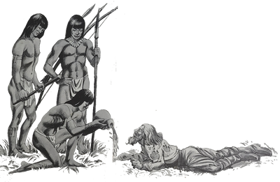
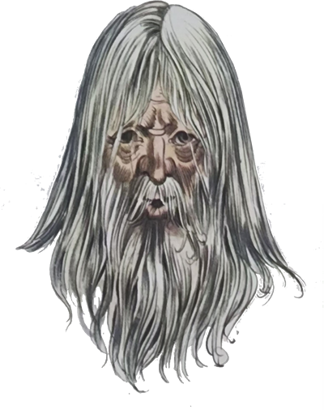
Finalmente chegou o momento em que o bandeirante não conseguiu resistir mais. Era preciso partir. Como estava não podia continuar. Lembrou-se de que era perseguido. Naturalmente seria preso. Partiu assim mesmo, para espanto dos índios. Ele, que antes tinha medo de pensar em voltar, agora só pensava em chegar à sua casa.
A volta não foi nada fácil, pois que ele se encontrava enfraquecido pela prolongada permanência na selva.
Para piorar ainda mais, começou a chover. Chovia que dava medo. As suas roupas, já bastante estragadas, encharcaram-se de água e lama. Ele, porém, parecia insensível a tudo. Continuava andando, andando, desejando chegar a casa o mais depressa possível. Só temia quando chegasse a algum povoado. Seria reconhecido? Correriam atrás dele?
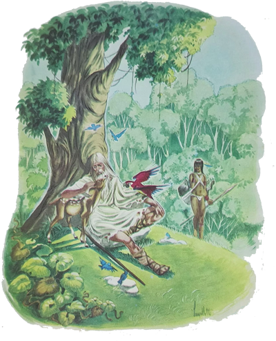
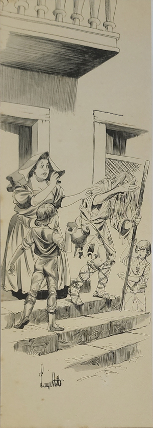
A medida que ia chegando perto de uma vila, começou a perder a coragem. Teve uma surpresa: o povo corria, mas não atrás dele. Corria dele! O pobre tentou conseguir alguma coisa de comer, alguma roupa, mas nada conseguiu. Ninguém tinha coragem suficiente para conversar com ele. Estava irreconhecível.
Um dia viu que já estava perto do lugar onde morava. A medida que chegava mais perto, ia esquecendo todo o sofrimento. Até que enfim ia rever os seus familiares. Entrou em São Paulo sem se preocupar em er preso ou não. Só queria chegar à sua casa. Não resistindo mais, pôs-se a correr. Tinha pressa de chegar. Bateu à porta. Veio sua mulher. Não conseguiu reconhecê-lo. Julgou-o um louco. Vieram seus filhos. Também acharam que era um estranho. Aquele homem feio, muito feio, era Borba Gato? Começaram a gritar. Os curiosos aproximaram-se. Os mais corajosos atenderam aos gritos da mulher e dos filhos do bandeirante e espancaram-no.
Tão surpreso estava ele que não esboçou uma reação sequer. Sem saber o que pensar, atordoado pelos gritos, pelas pancadas, saiu chorando em direção à selva. Era um sonho! Devia ser um sonho! Um pesadelo! Ao afastar-se, ainda ouviu alguém dizer:
- Imaginem! Esse bicho sem sentimentos querer passar pelo Borba Gato! Não faltava mais nada!
E o pobre seguiu em direção à Floresta, onde terminou seus dias completamente “desiludiudo”. Ninguém se preocupara em compreender-lhe os sentimentos, ou seja a sua aparência interior.
Como vocês veem, é uma lenda interessante e dá muito que pensar, não é mesmo, “criançauda”.